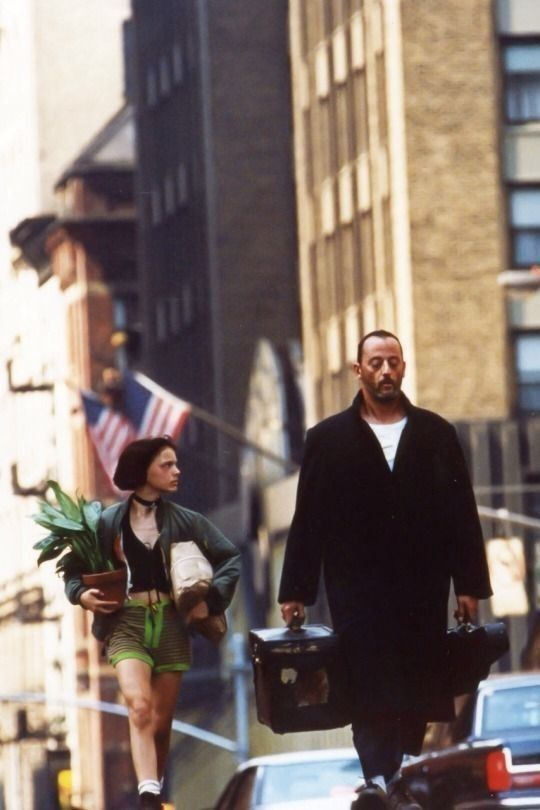

Burak Hayta
Hakkımda
Merhaba, ben Burak. 19 yaşında yazılım öğrenmeye çalışan birisiyim. Yolun daha başındayım, fakat yaptıklarımdan fazlasıyla keyif alıyorum. Bir 19 yıl sonra da burada görüşmek üzere...
İlgi Alanlarım
Film izlemek;
Müzik dinlemek;
Kitap Okumak;
Sevdiğim farklı bir filmden bir sahne;
